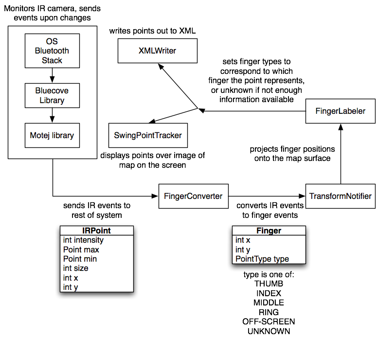

Overview
- The design of the system is to be able to track multiple fingers (four fingers) by using wii remote.
- The figure below shows the glove equipped one 12 V battery alone with four LED IR lights on the tip of four fingers.
- The wii remote uses its IR camera to receive all four IR LED light emitted from the four fingers as long as they are not out of range.
- The wii remote captures the locations of each finger and sends the x and y coordinates back to the computer by bluetooth every couple milliseconds.
- The program uses Java language and libraries to be able to recognize the wii remote by its bluetooth (Library BlueCove)
- The movements of the four fingers are captured using the MoteJ Library.This is done in real-time
- The coordinates can be sent to an XML format to be analyzed.
System Architecture
The system uses the Bluecove library to find and connect to Wii remotes over Bluetooth. The Motej library, an open-source Java library to communicate with the Wiimote, is used to get data from the Wiimote's IR camera. The Wiimote contains an IR camera with a 128x96 pixel monochrome camera behind an IR band-pass filter. Each pixel has 8 subpixels, for a total resolution of 1024x768 when the maximum sensitivity setting is used. The Wiimote has a built-in image processor which extracts the four brightest points visible and reports their position. More information on the sensitivity settings of the Wiimote and the protocols used to communicate with the IR camera can be found at http://wiibrew.org/wiki/Wiimote.
The Motej library is configured to fire events whenever the IR camera detects a change (point appears, point disappears, point moves). The event includes the positions, sizes, and intensities of the four brightest points visible. These events are received by our FingerConverter, which converts the points into a representation as a Finger, which can also include information about which finger the point represents. The FingerConverter then fires FingerEvents, which are received by our TransformNotifier. This uses the Java Advanced Imaging library to project the points from the perspective of the IR camera to the perspective of the flat map over which fingers are being tracker. The TransformNotifier then fires its own FingerEvents, which are received by the FingerLabeler. The FingerLabeler labels fingers based upon their ordering and distance from one another, provided that all four points are visible. If two or more points leave the viewing area, and fewer than all four come back, returning points are labeled as "unknown" until all four points become visible again. Points which do not leave the screen maintain their existing labels.
FingerEvents encapsulating labeled Fingers are then sent to the SwingPointTracker, which displays the points as colored dots on the screen over an image of the map, and to the XMLWriter, which writes points out to an XML file.System Requirements
CPU: Intel Pentium III (or better)
RAM: 128MB
Disk Space: 50MB free storage space
OS: Windows XP, Mac OS
Software: JRE 1.6 (or higher)
BlueTooth: BlueTooth 2.0 device (or better) using Widcomm, Bluez, or Bluesoleil stackHow to run the program
Navigate to the folder with the program and double-click WiiFingerTracker.jar to run it.
You can also run the program on the command line by typing java -jar WiiFingerTracker.jar
For more information please see the user documentation.Building
- Hardware - In addition to the Nintendo Wii Remote, the project requires that IR lights be attached to the user's fingers. To accomplish this, we constructed a fingerless glove with IR LEDs attached near the fingertips. To build such a glove, use the instructions located here.
- Software
- Run the command "ant" from the command line while in the root project directory to compile, build the runnable jar, and create or update the javadocs
- In Eclipse or Netbeans:
Make a new project and copy the source files to the project directory depending on how it's structured (src directory or root as src). Add the jar files to the build path, this is mostly done through the properties of the project file. One can now compile and run the program directory is Eclipse or Netbeans.To create a executable jar file just export the project in Eclipse or Netbeans and you will see the option to make a executable jar.Directory Structure
Additionally, the following files exist at the root level:
- docs: Documentation folder. Contains Javadocs for the project.
- lib: Holds all the library files used by the program as JARs
- src: Source folder. Contains source code for the project, and for the Motej library, for which easy access to the source code is desired due to a lack of documentation.
- bin: Class files are stored here when the project is built.
- resources: images used by the software
- resources/motejx: information used by the Motej library about the types of Wii devices it can connect to.
motes.list: Contains list of known Wiimote addresses.
WiiFingerTracker.jar: A runnable JAR file which launches the software.
log4j.properties: Configures the desired verbosity of logging.
build.xml: Ant script to build the project.
jar-in-jar-loader.zip: Used by the Ant script to build the runnable JAR file.
It is also possible that a directory called __MACOSX may exist. This is a file used by Mac OS X and included in all ZIP archives created on that operating system. It is not actually part of the project.Packages and Classes
- driver(Package)
- Driver.java - Main program. Starts the MoteFinderUI, when finished starts the CalibrationUI. After gathering corner points of the map, the PointTrackerUI is started.
- PipelineFactory.java - Assembles the transformNotifier and fingerLabeler together into a pipeline.
- fingertracking(Package)
- FingerLabeler.java - Labels the fingers in the correct order given the IR points from the wii remote.
- IrCameraNotifier.java - Notifier class used by transformNotifier for notifiying all the IR camera listeners
- TransformNotifier.java - This singleton class wraps the PerspectiveTransform class for detail hiding and to make it fit in the pipeline. PerspectiveTransform creates a projective transform from one plane in space to another. Specifically, since the map is identical to the image, it takes any point from the camera, and returns its location relative to the map.
- Finger.java - Point wrapper where each Finger has a PointType
- FingerEvent.java - Event class describing a finger being moved.
- PointType.java - Enum for the type of finger. The finger can be thumb, index, middle, ring, off screen or unknown(finger labeler can't tell what finger it is)
- FingerListener.java - Interface that extends EventListener to have fingerChanged method that takes care of fingerevents
- FingerConverter.java - Marks points reported at 1023, 1023, the default value, as off-screen. Marks other points as unknown. Wraps the Mote class as a FingerNotifier.
- FingerNotifier.java - Interface for adding FingerListeners.
- motefinder(Package)
- MoteAddressFinder.java - Finds the bluetooth address of discoverable wii remotes and returns them as strings.
- MoteAddressFinderListener.java - Extension of EventListener which provides functionality for when a remote is found.(moteFound())
- output(Package)
- XMLWriter.java - Writes the transformed points to an XML file.
- ui(Package)
- MoteFinderUI.java - Creates a UI that searches for discoverable Wii remotes and allows you to connect to them. Also, displays a history of known Wii remotes that you can also connect to.
- PointTrackerUI.java - Creates the UI that displays the four points seen by the Wiimote IR camera after their coordinates are transformed to be relative to the map.
- SwingPointTracker.java - Listens for points sent from the Transformnotifier and draws them on the screen. Also, draws corner points for the CalibrationUI and the map for the PointTrackerUI
- CalibrationUI - Creates a window for gathering the corners of the map. Sends the data off to be used for Perspective Transformation in the TransformNotifier
Libraries
- Bluecove: It is a library for accessing bluetooth devices.
- motej: It is a library for communicating with the Wii Remote.
- Libraries used by Motej for logging information
- log4j-1.2.15.jar
- slf4j-api-.1.5.8.jar
- slf4j-log4j12-1.5.8.jar
- slf4j-simple-1.5.8.jar
- Layout Libraries for the GUI
- TableLayout-bin-jdk1.5-2009-08-26.jar
- TableLayout-javadoc-2009-08-26.jar
- TableLayout-src-2009-08-26.jar
- TableLayoutBuilders-all-jdk1.5-2009-08-26.jar
- TableLayoutExtensions-all-jdk1.5-2009-08-26.jar
Known Bugs and Limitations
- We do not currently filter the input from the camera for noise. If there is noise while some points are offscreen, it is possible for known points to be labeled as unknown as a result of the point's temporary disappearance due to noise. Once all four fingers are visible again, the points will be properly labeled again.
- Currently, the map image is hardcoded. It is not currently possible to select an alternate map image.
Troubleshooting and FAQ
Q. I doubled-click the program but nothing happened?
A. Check whether your Java version is 1.6. You can do this my going to command line or terminal and type
java -versionQ. I copied all the files to my project directory but I still errors highlighted in my code?
A. Check whether you have added the jar files to the build path. The jar files are required for the compiler to compile and the run the code.
Problem: Software fails to launch, displaying an error that "Bluetooth is not available."
Solution: On Windows, make sure that you have a compatible Bluetooth stack installed. Notably, the default Windows XP Bluetooth stack is NOT compatible with the L2CAP protocol needed to communicate with the Wiimote! On Windows XP, you must have the WIDCOMM, Bluez, or Bluesoleil Bluetooth stacks installed. On Mac OS X, the Bluetooth stack is only available in 32-bit Java at this time. In Mac OS X 10.6 and later, the 64-bit Java runtime is used by default. To change this setting, open /Applications/Utilities/Java Preferences and set the 32-bit Java runtime to have precedence over the 64-bit Java runtime for Java applications.
Problem: The software can't locate the Wiimote.
Solution: Make sure you are holding the 1 and 2 buttons and that this causes the row of LEDs on the Wiimote to flash. If you are doing this and are still having problems, hold the power button on the Wiimote to power it off and try again. If this still does not work, and you have used the Wiimote with the computer in question before, delete the Wiimote from the list of known Bluetooth devices at the operating system level and try again.
Problem: The software loses its connection to the Wiimote.
Solution: Make sure that the Wiimote is within a few meters of the computer and that the Wiimote batteries are not low in power. If it still doesn't work, try the steps for "The software can't locate the Wiimote" above.